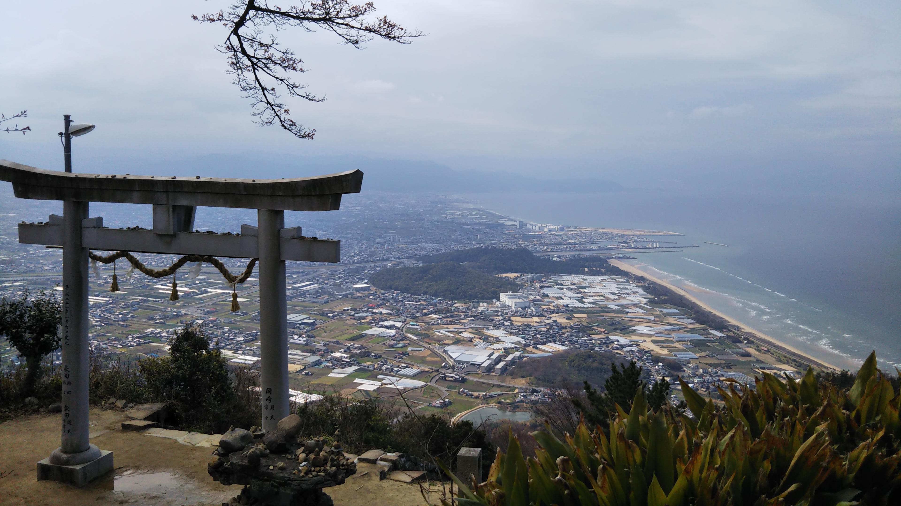
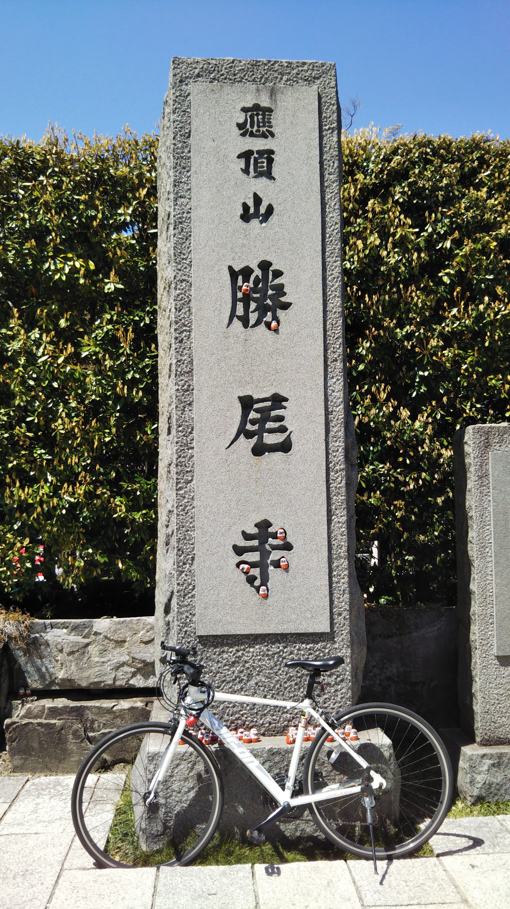
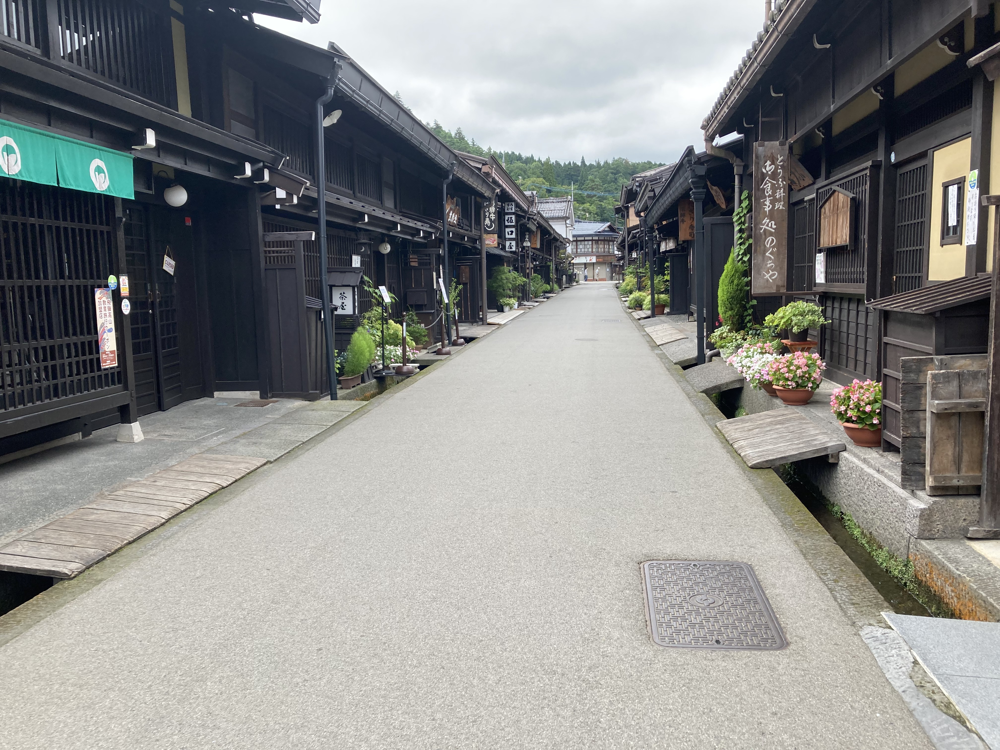
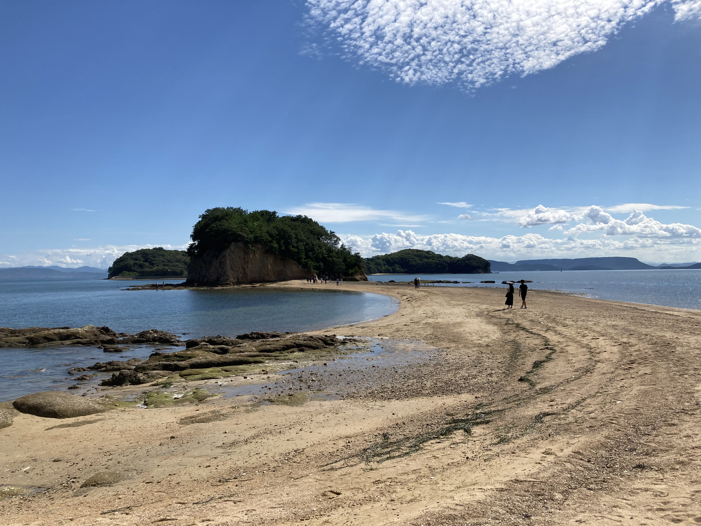
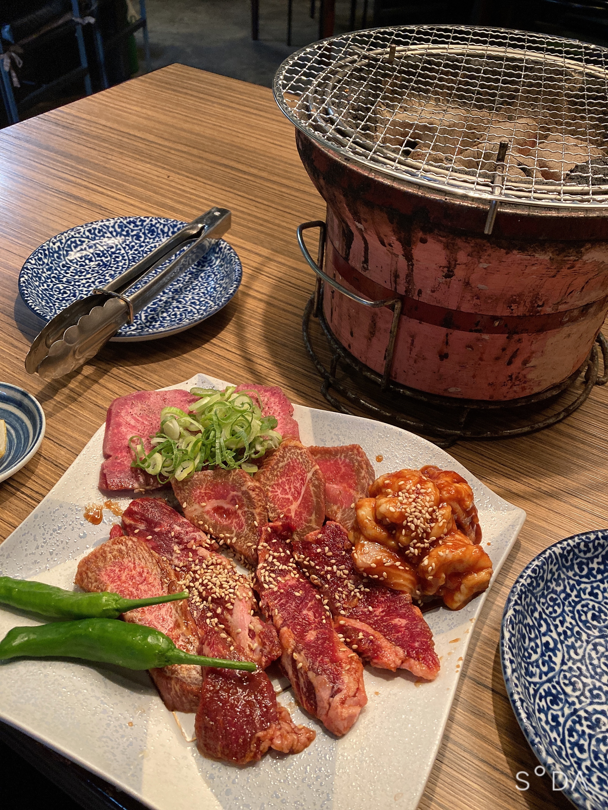
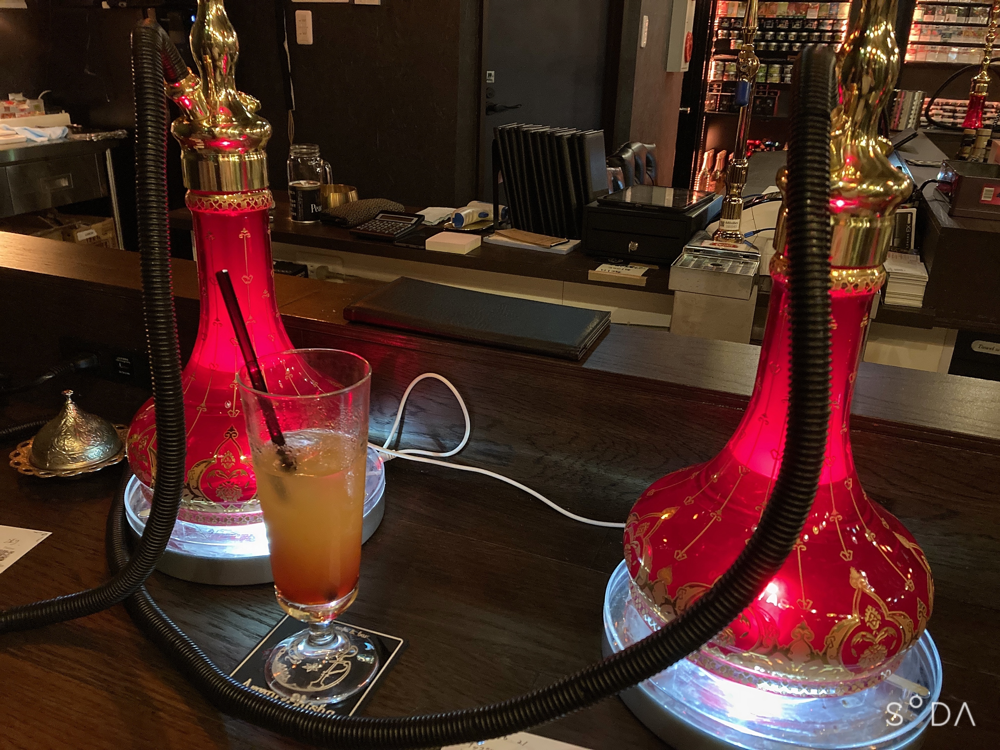
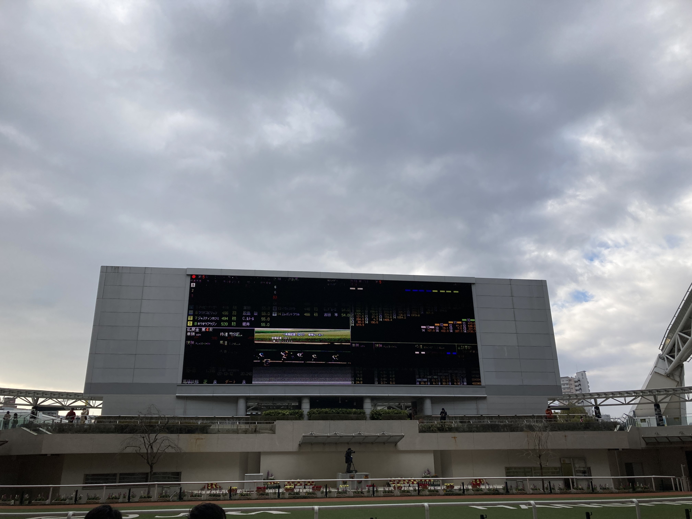

2021年を振り返る
2021年も早いもので，今日が大晦日である．今回は，写真を交えながら時系列順に2021年を振り返りたいと思う．
1月
企業の研究インターンに参加していた．志望業界かつ行きたい企業の1つであったので，結構頑張って取り組んだと思う．
また，企業の説明会が始まった．日程の勘違いで企業の方に迷惑をかけてしまったこともあった．
前年に原稿を投稿した国際学会 (5月) の採択が決定した．
2月
業界を絞って興味ある企業の説明会に参加したり，面談を受けたりした．2月後半には企業を2つに定めて，研究室の同期に見てもらいながらエントリーシートを作成したり，研究紹介のスライドを作ったりした．
就活したくないと思ったときに大学の研究をしていた．面白い結果が出たので，出た結果をどこに載せるかも指導教員の先生と相談していた．
3月
3月に2回面談をし，3月中旬に行きたい企業から内々定が出たので，就活を終えた．
内々定をいただいたあと，大学の研究を学会発表に出し，論文にするための準備をした．3月中旬，原稿の完成が見えてきた．
3月末，5月の国際会議の発表形式が通達された．スライドを用いて話したものを録画し，それを4月中旬までに送ることが指示された．まだ論文の原稿が完成していない状況で新しいタスクが増えたことで精神的につらくなって，1人で旅行をした．

4月
国際会議の発表のスライド作成と録画をなんとか終わらせた．気分転換として自転車に乗っていた．

5月
国際会議があった．英語の質問の対応は頑張ったと思う．
ちょくちょく研究室の同期と勉強会をしていた．
6月
国内会議があった．質問にうまく答えられなくて指導教員の先生にあとからアドバイスをもらった．
正式な内々定が出た．内々定者懇親会 (オンライン) があった．
7月
ワクチン接種 (1回目) があった．夜に熱が上がったが，翌日には下がっていた．
論文が reject された．修正して再投稿した．
8月
帯状疱疹に苦しんだ．たぶんワクチン接種の副反応だったんだと思う．1週間くらい薬を飲んで塗り薬をつけたら良くなったけど．
この頃 VTuber にハマって配信を見るようになった．
旅行 (氷菓の聖地巡礼) もした．

6月から7月にかけて取り組んでいた研究を発表しないかと先生から提案していただき，8月後半は学会の原稿を書いていた．
9月
余っていた18きっぷで小豆島旅行 (日帰り) をした．

この頃香水にハマった．
後半に推しのライブ (対面) やオンラインイベントがあったので参加した．
それ以外の時間は論文を書いていた．
10月
内定式があった．
論文が書き終わったので，お肉を食べたりシーシャバーに行ったりした．


この頃から過去の競馬のレースの動画を見るのにハマった．
11月
修論を書いていた．ほぼ書き終わっていたので，興味があることを調べたり，自転車でヒルクライムしたり，展覧会を見たりしていた．

12月
引っ越しの準備を意識するようになった．
友人と競馬場に行くようになった．

修論の構成が決定し，これまで書いていたものに加えもう1章分の内容を追加することになった．また，その内容を学会の原稿として書くことになった．年末年始に帰省しているときに書こうかと思っていたがやる気が起こらず，年明けに戻ったあとに頑張ろうかなと思っている．
まとめ
論文執筆や学会発表を頑張ったと思う．
気分転換という体で外出したことも多い (マスクをつける，手洗いうがいを徹底する等は意識したが…)．
そろそろ気兼ねなく友人とご飯に行ったり旅行したりしたい．